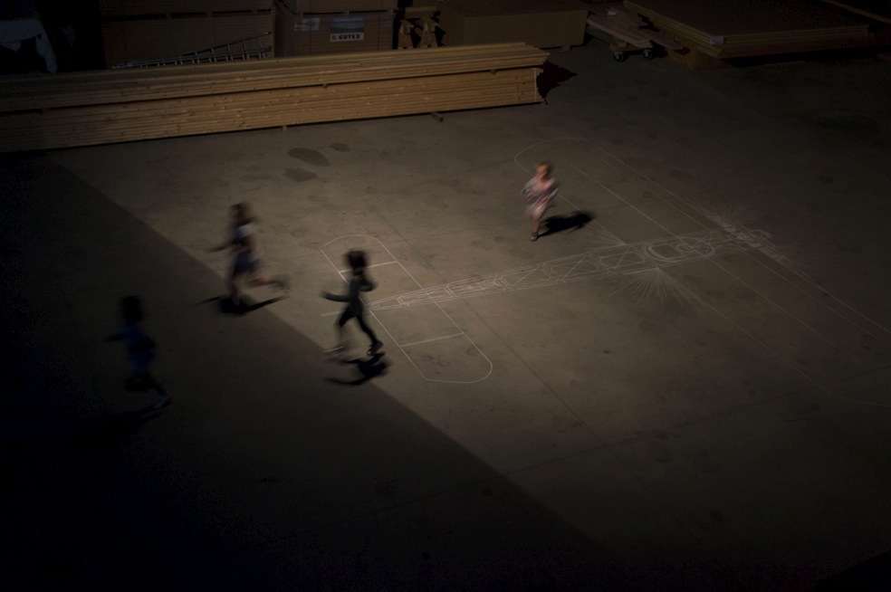
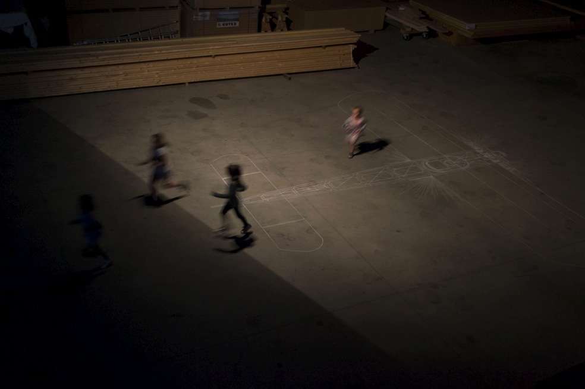
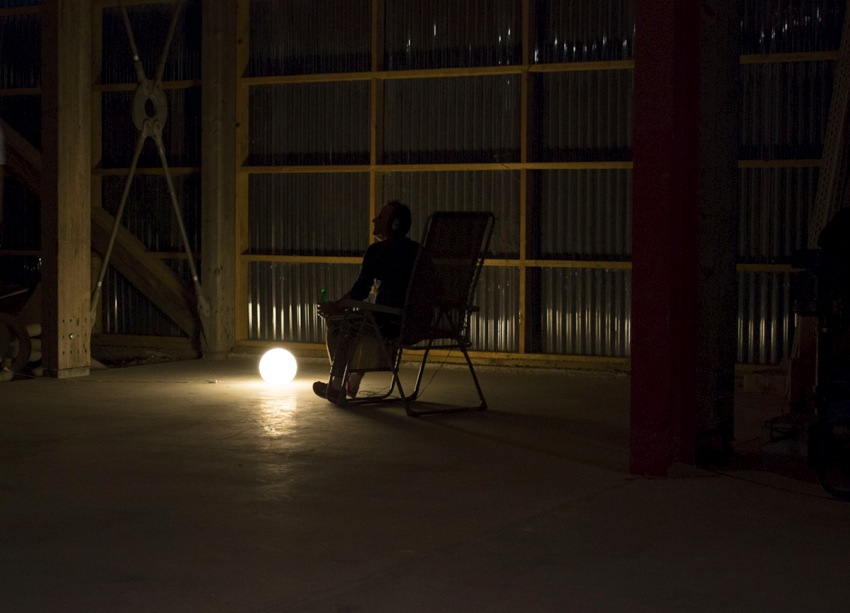

Ex Machina

Natūralaus lėktuvo dydžio piešinys, kreida. Pagal Bleriot XI tipo lėktuvo schemą. Tai buvo vienas iš pirmųjų lėktuvo modelių aviacijos istorijoje. Juo pilotas Edouard Bague bandė perskristi Viduržemio jūrą, bet galimai sudužo netoli Korsikos. Jo kūnas niekada nebuvo rastas.
Pristatyta rezidencijoje UTOPIA
 

Garso įrašas | 3:26"
Lankytojas gali patogiai įsitaisyti fotelyje ir klausytis ramaus moteriško balso.
Tai hipnozės ir skrydžio saugumo instrukcijų mišinys.
Tekstai: Verana Costa
